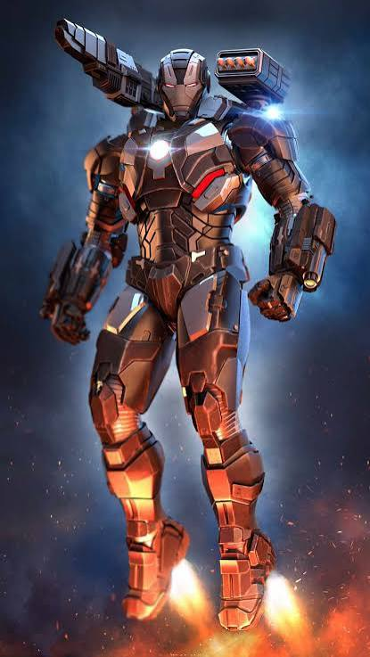
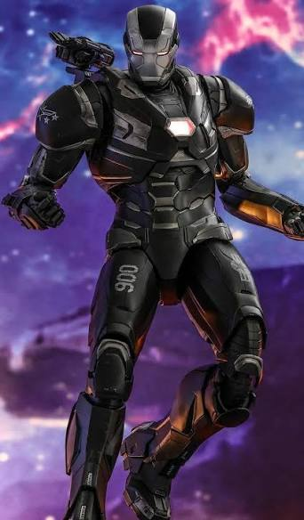
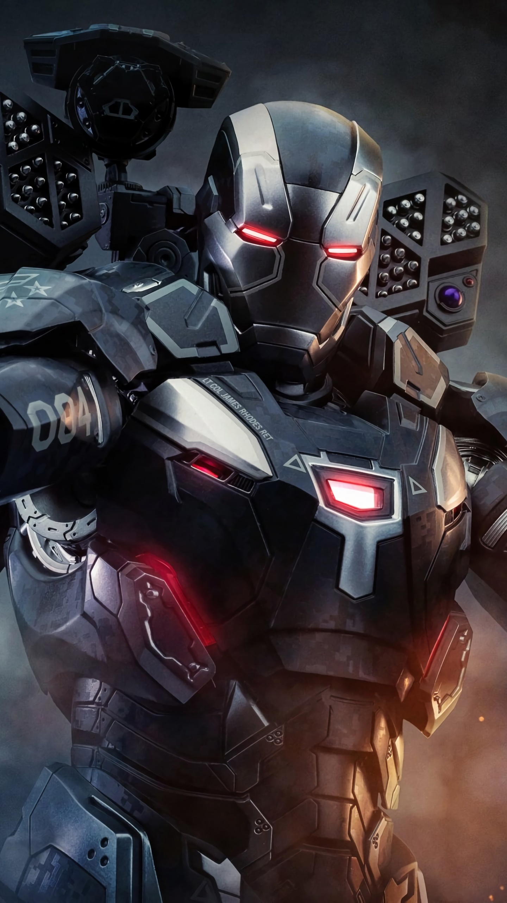

War Machine, whose real name is James “Rhodey” Rhodes, is a highly skilled military officer and superhero in the Marvel Cinematic Universe. He is a close friend of Tony Stark and uses a powerful armored suit based on Iron Man’s technology. Rhodey’s War Machine armor provides enhanced strength, durability, flight, and advanced weapons. Unlike Iron Man’s suits, War Machine’s armor is heavily focused on military combat and includes powerful guns, missiles, and other weapons. He becomes an important ally of the Avengers and fights against enemies such as Ultron, Thanos, and their forces. Rhodey also plays an important role in major battles alongside Iron Man, Captain America, and other Avengers. War Machine is best known for his military experience, armored suit, heavy weapons, combat skills, and loyalty to his friends and teammates.